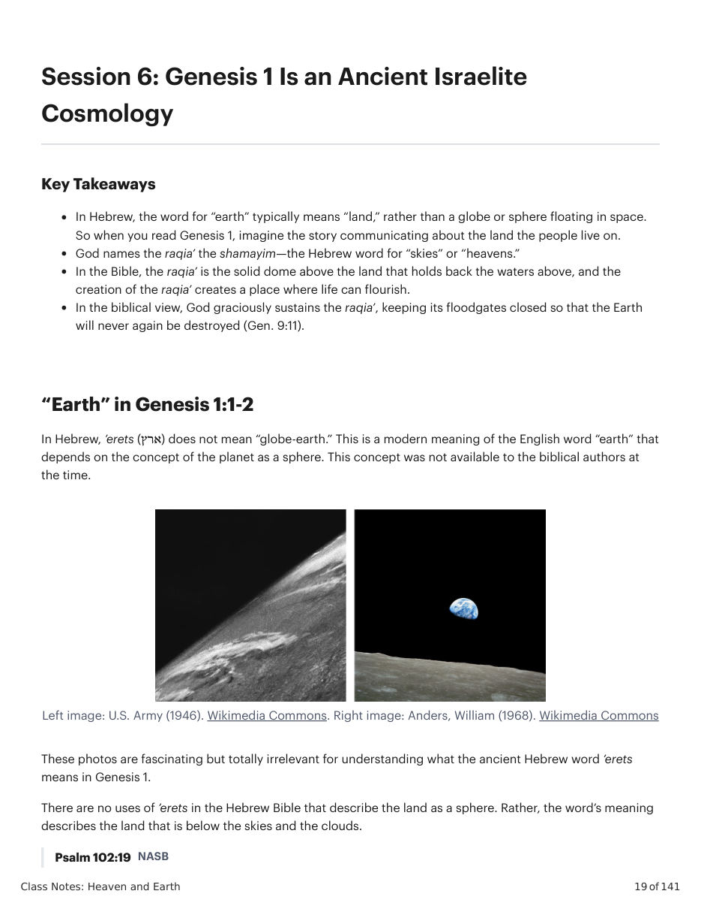
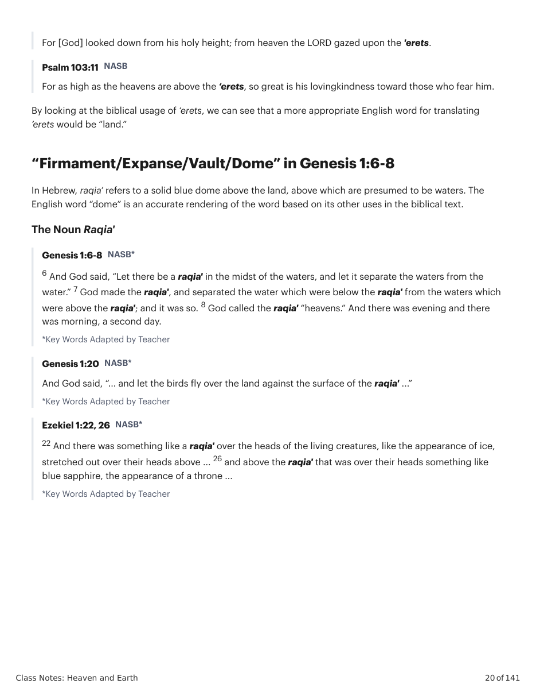
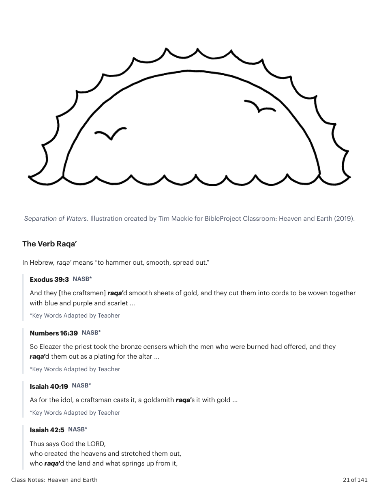
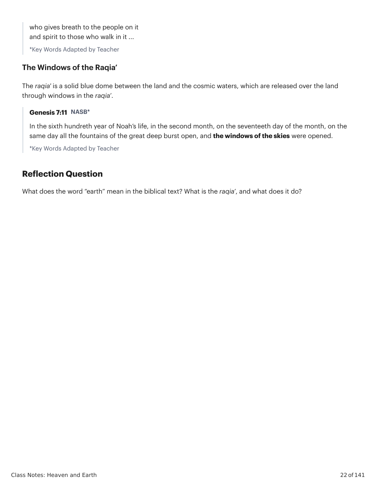

Left image: U.S. Army (1946). Wikimedia Commons. Right image: Anders, William (1968). Wikimedia Commons
These photos are fascinating but totally irrelevant for understanding what the ancient Hebrew word ’erets means in Genesis 1. There are no uses of ’erets in the Hebrew Bible that describe the land as a sphere. Rather, the word’s meaning describes the land that is below the skies and the clouds. Psalm 102:19 NASB For [God] looked down from his holy height; from heaven the LORD gazed upon the 'erets. Psalm 103:11 NASB For as high as the heavens are above the ‘erets, so great is his lovingkindness toward those who fear him. By looking at the biblical usage of ‘erets, we can see that a more appropriate English word for translating ’erets would be “land.” “Firmament/Expanse/Vault/Dome” in Genesis 1:6-8 In Hebrew, raqia’ refers to a solid blue dome above the land, above which are presumed to be waters. The English word “dome” is an accurate rendering of the word based on its other uses in the biblical text. The Noun Raqia' Genesis 1:6-8 NASB* 6 And God said, “Let there be a raqia' in the midst of the waters, and let it separate the waters from the water.” 7 God made the raqia', and separated the water which were below the raqia' from the waters which were above the raqia'; and it was so. 8 God called the raqia' “heavens.” And there was evening and there was morning, a second day. *Key Words Adapted by Teacher Genesis 1:20 NASB* And God said, “... and let the birds fly over the land against the surface of the raqia' ...” *Key Words Adapted by Teacher Ezekiel 1:22, 26 NASB* 22 And there was something like a raqia' over the heads of the living creatures, like the appearance of ice, stretched out over their heads above ... 26 and above the raqia' that was over their heads something like blue sapphire, the appearance of a throne ... *Key Words Adapted by Teacher
Separation of Waters. Illustration created by Tim Mackie for BibleProject Classroom: Heaven and Earth (2019).
What does the word “earth” mean in the biblical text? What is the raqia’, and what does it do?
Como a imagem de Gênesis 1 como a construção de uma "casa" cósmica muda sua compreensão do propósito da criação?



